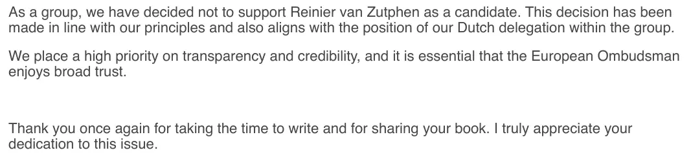

Exhibit · Email
Anders Vistisen MEP to Giltay, 10 December 2024
The passage
“As a group, we have decided not to support Reinier van Zutphen as a candidate. This decision has been made in line with our principles and also aligns with the position of our Dutch delegation within the group. We place a high priority on transparency and credibility, and it is essential that the European Ombudsman enjoys broad trust. Thank you once again for taking the time to write and for sharing your book. I truly appreciate your dedication to this issue.” Page 1, the third, fourth and fifth paragraphs of the reply from Anders Vistisen. The document is in English.

Why this document matters
Anders Vistisen’s quotation in the Voices section comes from this email. Reinier van Zutphen, then National Ombudsman of the Netherlands, was a candidate in the election of the European Ombudsman on 17 December 2024. On 9 December Giltay wrote to the Danish MEP to explain why he doubted the candidate’s record on transparency: Giltay had been discredited in an official report of a previous National Ombudsman after witnessing a military intelligence affair connected with the Dutch role in Srebrenica, in his account the Court of Appeal of The Hague had since confirmed the accuracy of his book, and Van Zutphen had neither withdrawn nor corrected that report. Giltay asked that these concerns be considered carefully before the vote, and attached the PDF of the English edition of his book. Vistisen, chief whip of the Patriots for Europe group, replied the next morning that his group had decided not to support Van Zutphen, and thanked Giltay for sending the book.
Provenance
- Document
- Email, two pages, printed from Gmail
- From
- Anders Vistisen, Member of the European Parliament, chief whip of the Patriots for Europe group
- To
- Edwin Giltay
- Date
- Tuesday 10 December 2024, 09:59
- Subject
- “RE: Concerns about Dutch candidate for European Ombudsman”
- In reply to
- Edwin Giltay’s message of Monday 9 December 2024, 19:09, printed in full below the reply
- References
- Reinier van Zutphen, National Ombudsman of the Netherlands and one of the candidates for European Ombudsman; his appearance in Brussels the week before; the judgment of the Court of Appeal of The Hague; the court cases Giltay had recently won; the vote of 17 December; the PDF of the English edition of the book; the website thecoverupgeneral.com; and the position of the Dutch delegation within the group
- Redactions
- The two recipients in the Cc line are blacked out in this copy
- Language
- English, in a Dutch-language Gmail interface
- Held by
- Edwin Giltay, the recipient
- See also
- National Ombudsman report 1999/507, 17 December 1999Court of Appeal of The Hague, judgment of 12 April 2016 (ECLI:NL:GHDHA:2016:870)
Cited in: the Voices section.
Exhibit page: https://
Document: https://
Last modified 26 July 2026, accessed 3 October 2026.

This page is an exhibit to the book The Cover-up General by Edwin Giltay and its accompanying website.